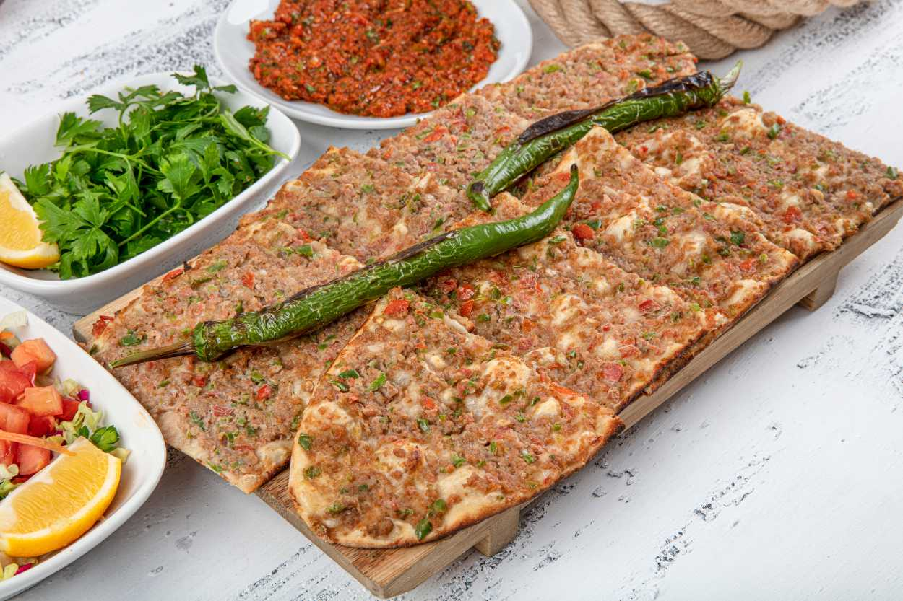

Etli ekmek is a delicious Turkish pizza-like dish originating from the city of Konya. The name of the dish means bread with meat. It consists of a thin, crispy flatbread made with flour, sugar, salt, yeast, and oil, which is then topped with ground beef and finely chopped onions, tomatoes, and peppers. Etli ekmek is sometimes additionally topped with cheese before baking. Once the baked dish develops a golden-brown color, it is served cut into smaller pieces while still warm. Pair it with a glass of refreshing ayran for the best experience.
Meal prep time : 1 hour 25 minutes
Servings : 6